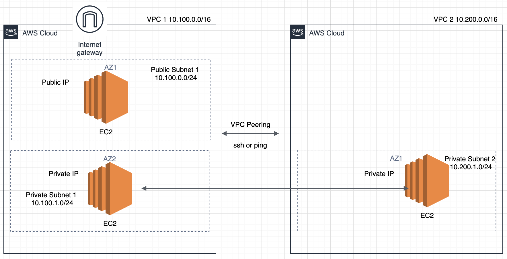

VPC Peering LAB
In this lab, you will create a VPC Peering connection between 2 VPCs and allow their resources to communicate across.
For that, you will need to launch 2 VPCs and a VPC peering connection, and to launch EC2 instances in each VPC with private connectivity between instances.

Create a VPC 1:
- Login to your AWS account
- Go to VPC Services and on the left panel, click on Your VPCs
- Click on Create VPC and give it a name (i.e. VPC-1) and a /16 CIDR block (i.e. 10.100.0.0/16), then leave the rest as default and click Create VPC
- Go back to the Your VPCs tab and check that your VPC has been created
Create a public subnet 1:
- Go to VPC Services and on the left panel, click on Subnets
- Click on Create Subnet
- choose your VPC from the list
- give it a name (PublicSub-1)
- choose one of the Availability Zones
- Use the first /24 of your VPC CIDR (i.e. 10.100.0.0/24)
- Click Create Subnet
Now, your subnet is setup but can only communicate within the VPC by default.
Create a private subnet 1:
- Go to VPC Services and on the left panel, click on Subnets
- Click on Create Subnet
- choose your VPC from the list
- give it a name (PrivateSub-1)
- choose one of the Availability Zones
- Use the first /24 of your VPC CIDR (i.e. 10.100.1.0/24)
- Click Create Subnet
Now, your subnet is setup but can only communicate within the VPC by default.
Create a public route table:
- In the VPC Services tab, click on Route Tables
- Click on Create Route Table
- choose your VPC from the list
- give it a name (PublicRT-1)
- Click Create
- On the Route Tables interface, look for your route table:
- select the route table
- on the panel at the bottom, click on Subnet Associations
- Edit subnet associations and select your public subnet 1 and Save
Now, you have a public route table that will be used to route all external (such as Internet) traffic to and from your public subnet. However, we still don’t know how to go to the Internet as we have no exit door yet.
Create an Internet Gateway:
- In the VPC Services tab, click on Internet Gateways
- Click on Create Internet Gateway
- give it a name (IGW-1) and Create
- Once it is created, you should be on its configuration page:
- click Actions and select Attach to VPC
- select your VPC 1 and Attach
Now, your Internet Gateway belongs to your VPC environment, so we can set it up to route all Internet traffic.
- In the VPC Services tab, click on Route Tables
- On the Route Tables interface, look for your public route table:
- select the public route table
- on the panel at the bottom, click on Routes then Edit routes
- Click Add route, set the following:
- Destination: 0.0.0.0/0 (0/0 means everywhere, it is not restricted to a specific network)
- Target: Select Internet Gateway 1 from the drop-down
- Save the changes
Create a private route table:
- In the VPC Services tab, click on Route Tables
- Click on Create Route Table
- choose your VPC from the list
- give it a name (PrivateRT-1)
- Click Create
- On the Route Tables interface, look for your route table:
- select the route table
- on the panel at the bottom, click on Subnet Associations
- Edit subnet associations and select your private subnet 1 and Save
Create a private instance 1:
- Go to EC2 Services and click on Launch Instance
- select the 1st Amazon Linux AMI from the list
- leave the Instance type as default and click Next
- Set the below:
- Network: choose your VPC 1
- Subnet: choose your private subnet 1
- Auto-assign Public IP: Select Disable
- Leave the rest as default and go to the next page
- Leave Storage as default and go to the next page
- In Tags, create a tag with Key : Name and Value : PrivateEC2-1"
- In the security group name the sg as SG-Private-1 and for SSH rule, change the source to 10.100.0.0/24 (As we would only want to ssh to it from our public instances in our public subnet) and add a new rule for ALL ICMP IPv4 and set the source to 10.100.0.0/16.
- In the Review and Launch page, click Launch and select your KP that you created and stored locally during the Linux course
If you deleted your key pair, just create a new one and download it.
Create a public instance 1:
- Go to EC2 Services and click on Launch Instance
- select the 1st Amazon Linux AMI from the list
- leave the Instance type as default and click Next
- Set the below:
- Network: choose your VPC 1
- Subnet: choose your public subnet 1
- Auto-assign Public IP: Select Enable
- Leave the rest as default and go to the next page
- Leave Storage as default and go to the next page
- In Tags, create a tag with Key : Name and Value : PublicEC2-1"
- In the security group name the sg as SG-Public-1 and for SSH rule, change the source to MyIP.
- In the Review and Launch page, click Launch and select the same KP as for the private instance
Now, you have to copy those steps to create the same environment in the second VPC, with the exception of the public instance because we will use the public instance in VPC-1 to login to the private instances of both VPC-1 and VPC-2, so a single public instance across 2 VPCs is enough in this context.
Create a second VPC:
- Login to your AWS account
- Go to VPC Services and on the left panel, click on Your VPCs
- Click on Create VPC and give it a name (i.e. VPC-“2”) and a /16 CIDR block (i.e. 10.200.0.0/16), then leave the rest as default and click Create VPC
- Go back to the Your VPCs tab and check that your VPC has been created
Create a private subnet:
- Go to VPC Services and on the left panel, click on Subnets
- Click on Create Subnet
- choose your VPC from the list
- give it a name (PrivateSub-2)
- choose one of the Availability Zones
- Use the first /24 of your VPC CIDR (i.e. 10.200.1.0/24)
- Click Create Subnet
Create a private route table:
- In the VPC Services tab, click on Route Tables
- Click on Create Route Table
- choose your VPC from the list
- give it a name (PrivateRT-2)
- Click Create
- On the Route Tables interface, look for your route table:
- select the route table
- on the panel at the bottom, click on Subnet Associations
- Edit subnet associations and select your private subnet 2 and Save
Create a private instance 2:
- Go to EC2 Services and click on Launch Instance
- select the 1st Amazon Linux AMI from the list
- leave the Instance type as default and click Next
- Set the below:
- Network: choose your VPC 2
- Subnet: choose your private subnet 2
- Auto-assign Public IP: Select Disable
- Leave the rest as default and go to the next page
- Leave Storage as default and go to the next page
- In Tags, create a tag with Key : Name and Value : PrivateEC2-2"
- In the security group part add one port for ssh and another for ping, as below:
The security group of our second VPC should allow instances in VPC-1 to ping instances in VPC-2.
- Change source in the SSH rule to 10.100.0.0/16 and add another route for ALL ICMP IPv4, set the source to 10.100.0.0/16.
- In the Review and Launch page, click Launch and select the same KP as for previous instances
Create a peering connection:
- In the navigation pane, choose Peering Connections, Create Peering Connection.
- Configure the following information, and choose Create Peering Connection when you are done:
- Peering connection name tag: You can optionally name your VPC peering connection.
- VPC (Requester): Select the VPC in your account with which you want to create the VPC peering connection -> 10.100.0.0/16 (VPC-1)
- Under Select another VPC to peer with: Ensure My account is selected, and select another of your VPCs -> 10.200.0.0/16 (VPC-2)
- In the confirmation dialog box, choose OK.
- Select the VPC peering connection that you’ve created, and choose Actions, Accept Request.
- In the confirmation dialog, choose Yes, Accept. A second confirmation dialog displays; choose Modify my route tables now to go directly to the route tables page, or choose Close and go to Route Tables.
Note
If you cannot see the pending VPC peering connection, check the region. An inter-region peering request must be accepted in the region of the accepter VPC.
In the confirmation dialog box, choose Yes, Accept. A second confirmation dialog displays; choose Modify my route tables now to go directly to the route tables page, or choose Close and go to Route Tables.
Now we have to update the route tables to express the peering connection.
Add a Route in Public subnet of VPC 1 to connect to Private subnet in the VPC 2.
- In the VPC Services tab, click on Route Tables. Select the Route Table that is associated with the public subnet of the VPC 1.
- on the panel at the bottom, click on Routes then Edit routes
- Click Add route, set the following:
- Destination: 10.200.1.0/24
- Target: pcx-xxxxxxxx (select the peering connection you have just established)
- Save the changes
Add a Route in Private subnet of VPC 1 to connect to Private subnet in the VPC 2.
- In the VPC Services tab, click on Route Tables. Select the Route Table that is associated with the private subnet of the VPC 1.
- on the panel at the bottom, click on Routes then Edit routes
- Click Add route, set the following:
- Destination: 10.200.1.0/24
- Target: pcx-xxxxxxxx (select the peering connection you have just established)
- Save the changes
Now you’ll have to do the same for the second VPC.
Select the Route Table that is associated with the private subnet of the VPC 2.
- on the panel at the bottom, click on Routes then Edit routes
- Click Add route, set the following:
- Destination: 10.100.0.0/16 (We are using the whole /16 because we want to include both private and public /24 subnets)
- Target: pcx-xxxxxxxx (select the peering connection you have just established)
- Save the changes
Now the architecture is set up. You can try ssh to the instances and try to ping them.
Test public connectivity to your public instance:
Look for the private IP address of the private instance in VPC-1 (In EC2 Services, check the bottom panel details of your instance), and write it down somewhere.
Look for the private IP address of the private instance in VPC-2 (In EC2 Services, check the bottom panel details of your instance), and write it down somewhere.
Now, copy the public IP of your public instance, login to it with SSH and run the below connectivity tests.
Connectivity to the local (VPC-1) private instance by replacing X.X.X.X with its IP:
ping X.X.X.X
Connectivity to the VPC-2 private instance by replacing Y.Y.Y.Y with its IP:
ping Y.Y.Y.Y
They should both ping! If not, it probably means that the problem is either in the SecurityGroups not allowing ICMP traffic, or that your route tables are not properly configured.
Otherwise, well done! Good job!
Bonus Step
You can use the public instance to jump into both private instances of VPC-1 and VPC-2 using SSH, given we can’t access it publicly. In this case, we call this public instance a Bastion instance, it acts like a jump box.
If you manage to SSH to both instances, it proves your SSH communication across VPCs.
In order to jump into the private instances from the public instance, all the steps are detailed in this AWS page (both for MAC and Windows): https://aws.amazon.com/blogs/security/securely-connect-to-linux-instances-running-in-a-private-amazon-vpc/